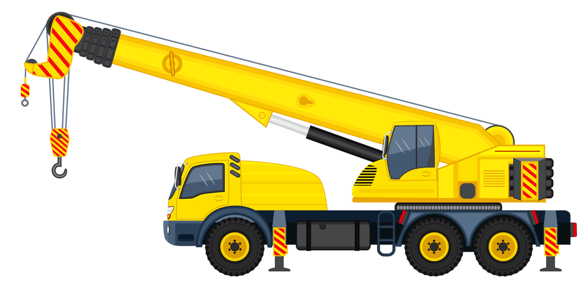
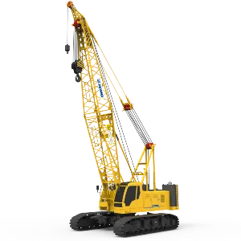
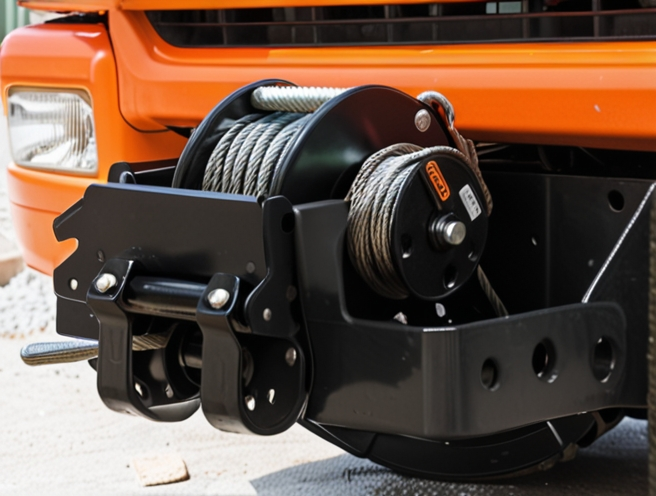

Башенные краны
Башенные краны — это специализированные подъемные механизмы, используемые преимущественно в высотном строительстве. Они представляют собой вертикальную мачту (башню), на которой закреплена стрела с механизмом подъёма груза.
Особенности башенных кранов:
Высокая грузоподъёмность (от нескольких тонн до сотен тонн).
Возможность работы на больших высотах.
Устойчивость благодаря креплению к фундаменту или зданию.
Различные типы стрел (горизонтальные, наклонные, поворотные).
Применение:
Строительство жилых и коммерческих зданий.
Возведение мостов и промышленных сооружений.
Монтаж металлоконструкций.
Автокраны
Автокраны представляют собой мобильные краны, установленные на шасси грузовых автомобилей. Благодаря этому они обладают высокой маневренностью и могут быстро перемещаться между стройплощадками.
Особенности автокранов:
Грузоподъёмность варьируется от 10 до 500 тонн.
Компактность и мобильность.
Возможность работы в условиях ограниченного пространства.
Различные виды стрел: телескопические, решётчатые.
Применение:
Перемещение строительных материалов.
Монтаж оборудования.
Проведение аварийно-спасательных работ.
Разгрузка и погрузка грузов в логистических центрах.
Гусеничные краны
Гусеничные краны — это мощные грузоподъёмные машины, оснащённые гусеничным движителем, что позволяет им работать на сложных грунтах и в условиях бездорожья.
Особенности гусеничных кранов:
Высокая проходимость благодаря гусеничному ходу.
Отсутствие необходимости в дополнительной опоре.
Возможность перемещения с грузом.
Грузоподъёмность до нескольких сотен тонн.
Применение:
Строительство мостов, тоннелей, плотин.
Работы на нефтегазовых месторождениях.
Подъём и перемещение тяжёлых конструкций в сложных условиях.
Лебёдки и тали
Лебёдки и тали — это компактные устройства, предназначенные для подъёма и перемещения грузов на небольшие расстояния. Они широко применяются как вспомогательные механизмы.
Особенности:
Лебёдки могут быть ручными, электрическими или гидравлическими.
Тали бывают цепными и канатными.
Простота конструкции и эксплуатации.
Грузоподъёмность от нескольких килограммов до десятков тонн.
Применение:
Подъём грузов на складах и в мастерских.
Монтажные работы на строительных объектах.
Использование в производственных цехах.